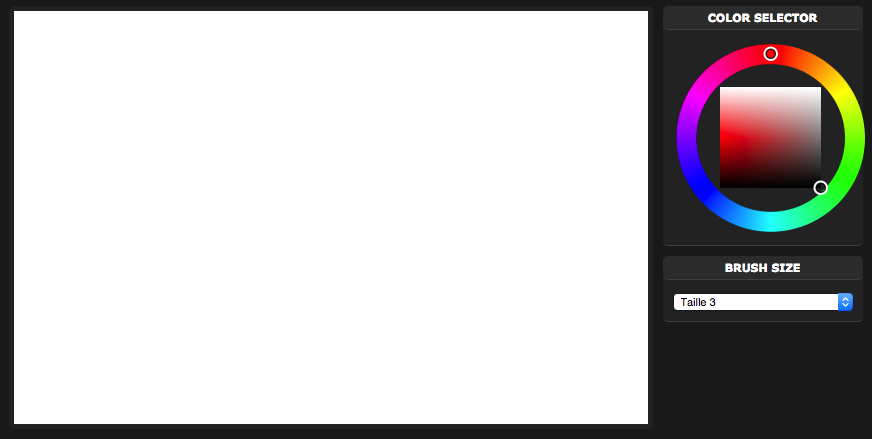
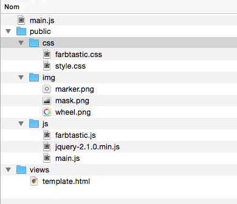

Cette page explique la réalisation d'un simple tableau blanc colaboratif en Node.js. Un aperçu de l'application finale :

Le tableau blanc présentera les fonctionnalités suivantes :
Ce tutoriel est conçu pour être un bon exemple d'utilisation des dernières technologies du web. Nous utiliserons :
Une première partie nécessaire à la mise en place et à la configuration des outils.
Vous devez premièrement possèder Node.JS.
Node.js fonctionne avec un système de packet. Pour ce projet nous utiliserons les packets suivants :
L'instalation de ces packets peut se faire facilement avec la commande suivante :
npm install socket.io fs express
Même si le projet ne comporte pas beaucoup de fichiers, nous ademetrons la structure de base suivante :
Vous pouvez trouver ici l'ensemble de cette architecture, constituant une base fonctionelle pour tout projet Node.js.
Pour le tableau blanc, il faudra y ajouter les fichiers du plugin farbastic, pour obternir finalement ceci :

Aucun serveur Apache/ PHP n’est utilisé. Seul NodeJS établit une communication avec le client, il faut donc envoyer les fichiers de bases au client (HTTP, CSS, JS). Pour cela nous utiliserons simplement express. Ceci permettra d'afficher la page de base quand l'utilisateur se rendra à l'adresse http://localhost:8080